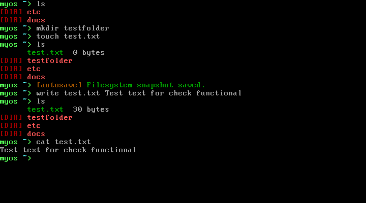
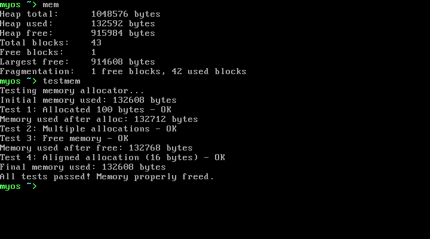

Посмотрите в действии
Скриншоты терминала, показывающие возможности MyOs

Инициализация системы и запуск оболочки

Список директорий и навигация

Выделение памяти и статистика

Отображение информации об ATA диске